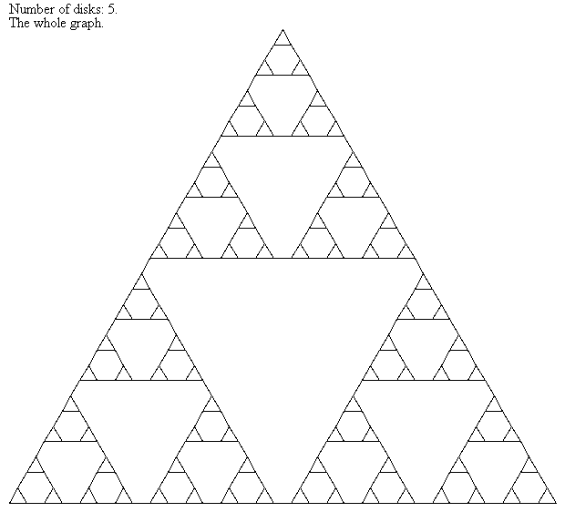
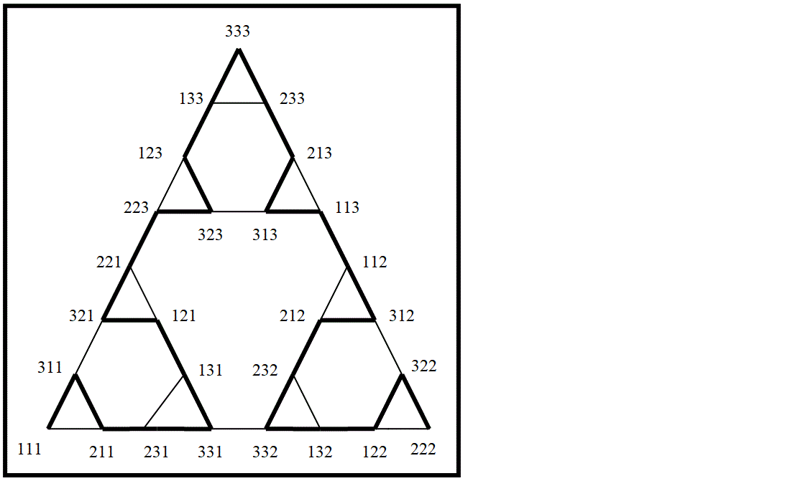
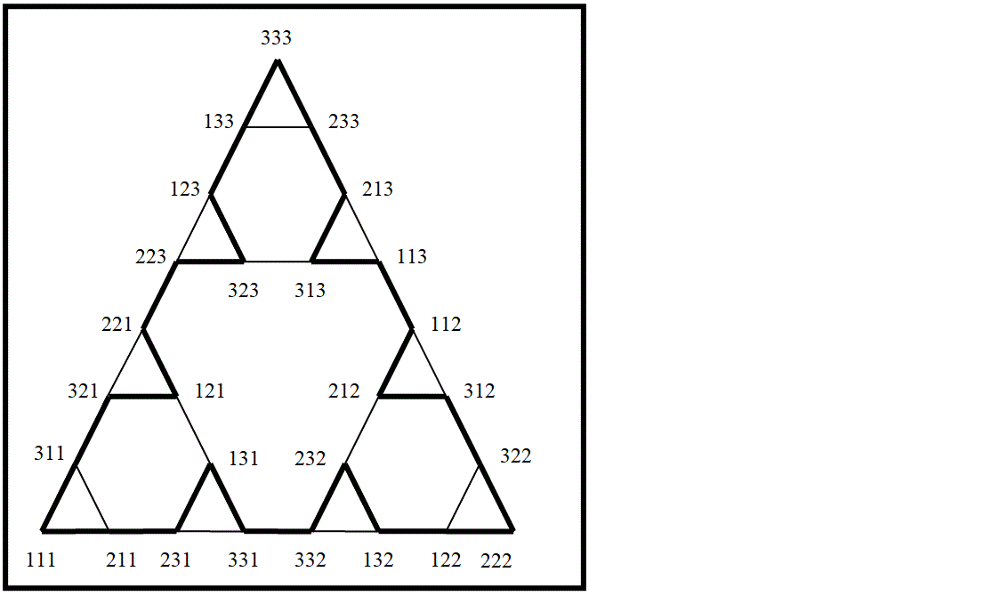

Tower of Hanoi
| (require hanoi/hanoi) |
Introduction
The Tower of Hanoi is a game. It has 3 pegs, one at the left, one in the middle and one at the right. It has a number of disks. The disks have different sizes and a hole in the center. They are put on the pegs. A disk never rests upon a smaller disk. Initially all disks are on the peg at the left, forming a conical tower with the disks in order of decreasing size from bottom to top. The goal of the game is to move all disks to the peg at the right by making successive moves. A move is made by taking the top disk of a non-empty peg and putting it on top onto another peg or just putting there if the peg of destination currently has no disks. However, it is not allowed to put a disk upon a smaller one. Hence a disk never rests upon a smaller one.
How to play
procedure
(play) → void?
Height
Opens a modal dialog for selection of the desired number of disks,
at least one, at most nine.
Initially the height is 9.
Mode
Opens a modal dialog for selection of the mode, which is manual, short, long or circular.
Initially the mode is manual.
In manual mode the user is supposed to click the peg button the disk is to be taken from followed by a click on the peg button of destination. An attempt to make an illegal move is ignored.
In short mode the disks are moved by the GUI to the peg at the right with the least possible number of moves, at most 2h-1 moves, where h is the height.
When the long mode is selected, first all disks are placed on the peg at the left and subsequently moved to the peg at the right with the largest number of moves possible without passing any distribution of disks more than once. 3h-1 moves, where h is the height. In fact every feasible distribution of disks is visited.
When the circular mode is selected, first all disks are placed on the peg at the left and subsequently moved such as to pass exactly once along every feasible distribution of disks and finishing with all disks at the peg started from. 3h moves, where h is the height.
The short, long and circular mode can be aborted by clicking the reset or quit button, which make the GUI return to manual mode.
Delay
The delay is specified by means of a modal dialog.
It is either click or a non-negative real number
written with not more than 6 characters.
It applies to modes short, long and circular.
When the delay is click a move is made after each mouse click at arbitrary position in the window of the GUI but not on the reset or quit button, which terminate the modes short, long and circular and return to manual mode.
If the delay is a non-negative real number, say d, the GUI waits d seconds between successive moves. In fact the delay is d+ε seconds, ε being the minimum time for a single move, which is the non-zero real time needed for calculations and graphical rendering and the real time lost while no processor was evailable for the GUI. ε depends on your CPU and GPU and the load by other programs. It may be about 1 ms.
Reset
Puts all disks on the peg at the left.
Setup
Removes all disks and subsequently places disks on the pegs in a distribution chosen by the user.
Disks are placed in order of decreasing size.
The user is supposed to click a peg button
indicating on which peg each next disk is to be placed.
Requires height such clicks.
Click the reset or quit button to cancel setup.
Quit
Closes and terminates the GUI, but during modes short, long and circular and
during setup returns to mode manual
without closing the GUI.
The window of the GUI window can be closed by means of the close button in the title bar (at the top-right corner), but procedure play probably is not terminated because it may keep waiting for a mouseclick. However, after closing the GUI window, no such mouse-click can be made. In Graphics: Legacy Library I have not found a mean to check the state of a viewport.
(open, hidden or closed)
Peg n, n being 1, 2 or 3.
Used to make moves manually and for setup of a distribution of disks.
Appendix
Let h be the number of disks. The disks can be distributed among the pegs in 3h ways. The distributions can be taken as the vertices of a connected graph with the moves as bidirectional edges of length one. Connectivity means that there is at least one path between every two vertices. The graph can be drawn such as to resemble a Sierpińsky triangle. For example, for 5 disks:

In contrast to a Sierpińsky triangle the vertices of the triangles of a Hanoi graph do not coincide with the vertices of other triangles. The vertices of two triangles are separated by at least one edge. The three vertices of the largest triangle represent distributions of all disks on the same peg. These have two edges only, the two moving the smallest disk to one of the two empty pegs. All other vertices of the graph represent distributions with at most one empty peg. Such a vertex has three edges. Let Pa, Pb and Pc be the three pegs in increasing order of the size of the disk on top, regarding an empty peg as having the largest disk on top. Then there are three edges: Pa→Pb, Pa→Pc and Pb→Pc. The graph has (3(3h-3)+3×2)/2) = (3h+1-3)/2 edges because it has h3 vertices, of which h3-3 have 3 edges and 3 vertices have 2 edges only. The division by 2 is needed because every edge connects 2 vertices.
Consider paths from a distribution of all disks on the same peg to a distribution with all disks on another peg. These distributions are represented by the vertices of the largest triangle. The least number of moves required is h2-1 with uniquely defined sequence of moves. This is the short mode, in the graph shown by the sides of the largest triangle.
The largest number of moves without passing a distribution of disks among the pegs more than once is h3-1, implying that every feasible distribution is visited exactly once. This is the long mode and is uniquely defined too. For three disks:

Another interesting way is the circular mode, moving the disks such as to visit all feasible distributions of disks among the pegs exactly once and finishing with all disks on the starting peg. This takes h3 moves. The circular mode is uniquely defined too when disregarding the fact that the path can be followed in opposit direction too. For three disks:

The number of distinct non self-crossing paths from a distribution with all disks on the same peg to one with all disks on another peg, those not passing all vertices included, is a(n) with a(0)=1 and a(n+1)=a(n)2+a(n)3. This is a very fast increasing sequence. See A125295 of OEIS.
Regarding elementary arithmetic operations as non-recursive, given height h, starting peg f and destination peg t, all information about the mth move along the shortest path from f to t and the resulting distribution of disks can be computed without recursion. Written in Scheme or Racket:
Legend |
| m |
| move number, starting from 1. |
| h |
| height of the tower, id est the number of disks. h>0. | |
| f |
| starting peg, 0, 1 or 2. More convenient than ordinals 1, 2 and 3. | |
| t |
| destination peg, 0, 1 or 2, but t≠f. | |
| d |
| disk, 0≤d<h, in order of size, 0 being the smallest disk. |
Notice that in the formulas the pegs have ordinals 0, 1 and 2.
For the formulas this is more convenient than the ordinals 1, 2 and 3
as used in the GUI.
(define (exp2 n) (expt 2 n)) (define (mod2 n) (modulo n 2)) (define (mod3 n) (modulo n 3)) (define (pari n) (add1 (mod2 (add1 n)))) (define (rotd h d f t) (mod3 (* (- t f) (pari (- h d))))) (define (rotr h f t) (rotd h 0 t f)) (define (mcnt m d) (quotient (+ m (exp2 d)) (exp2 (add1 d)))) (define (thrd m h f t) (mod3 (+ f (* m (rotr h f t))))) (define (onto m h f t) (mod3 (- (thrd m h f t) (rotd h (disk m) f t)))) (define (from m h f t) (mod3 (+ (thrd m h f t) (rotd h (disk m) f t)))) (define (posi m h d f t) (mod3 (+ f (* (rotd h d f t) (mcnt m d))))) (define (disk m) (sub1 (integer-length (bitwise-xor m (sub1 m)))))
(disk m) identifies the disk being moved during move m and is the number of times m can be divided by 2. from, onto and thrd are the peg the disk is taken from, the peg it is moved to and the remaining third peg. posi computes the position of disk d after move m.
(time (begin (define h 80) (define N-Avogadro 602214076000000000000000) (define f 0) (define t 2) (printf "Length of the whole path: ~s~n" (sub1 (expt 2 h))) (printf "Move : ~s~n" N-Avogadro) (printf "Disk : ~s~n" (disk N-Avogadro)) (printf "From peg ~s~n" (from N-Avogadro h f t)) (printf "Onto peg ~s~n" (onto N-Avogadro h f t)) (printf "Thrd peg ~s~n" (thrd N-Avogadro h f t)) (printf "Positions of the disks in the resulting distribution~n") (printf "of disks in increasing order their sizes~n") (for ((d (in-range 40))) (printf "~s" (posi N-Avogadro h d f t))) (newline) (for ((d (in-range 40 h))) (printf "~s" (posi N-Avogadro h d f t))) (printf "~nTimes in ms: ")))
Length of the whole path: 1208925819614629174706175
Move : 602214076000000000000000
Disk : 17
From peg 1
Onto peg 0
Thrd peg 2
Positions of the disks in the resulting distribution
of disks in increasing order their sizes
2222222222222222200222112211102111021000
2222210210012011000210000110000111111110
Times in ms: cpu time: 0 real time: 0 gc time: 0
Similar formulas exist for the longest path from f to t:
(define (exp3 n) (expt 3 n)) (define (mod3 n) (modulo n 3)) (define (mod4 n) (modulo n 4)) (define (thrd m f t) (if (odd? m) t f)) (define (onto m h f t) (posi m (disk m) f t)) (define (from m h f t) (- 3 (onto m h f t) (thrd m f t))) (define (disk m) (if (zero? (mod3 m)) (add1 (disk (quotient m 3))) 0)) ;
(define (posi m d f t) (case (mod4 (mcnt m d)) ((0) f) ((1 3) (- 3 f t)) ((2) t))) ;
(define (mcnt m d) (+ (* 2 (quotient m (exp3 (add1 d)))) (mod3 (quotient m (exp3 d)))))
The following example resembles the one for the shortest path, but the differences are such that making a procedure that can handle both examples would make the code less easy to read.
(time (begin (define h 80) (define N-Avogadro 602214076000000000000000) (define f 0) (define t 2) (printf "Length of the whole path: ~s~n" (sub1 (expt 3 h))) (printf "Move : ~s~n" N-Avogadro) (printf "Disk : ~s~n" (disk N-Avogadro)) (printf "From peg ~s~n" (from N-Avogadro h f t)) (printf "Onto peg ~s~n" (onto N-Avogadro h f t)) (printf "Thrd peg ~s~n" (thrd N-Avogadro f t)) (printf "Positions of the disks in the resulting distribution~n") (printf "of disks in increasing order their sizes~n") (for ((d (in-range 40))) (printf "~s" (posi N-Avogadro d f t))) (newline) (for ((d (in-range 40 h))) (printf "~s" (posi N-Avogadro d f t))) (printf "~nTimes in ms: ")))
Length of the whole path: 147808829414345923316083210206383297600
Move : 602214076000000000000000
Disk : 0
From peg 2
Onto peg 1
Thrd peg 0
Positions of the disks in the resulting distribution
of disks in increasing order their sizes
1221202200000111112210111110011001120220
2011001112000000000000000000000000000000
Times in ms: cpu time: 0 real time: 0 gc time: 0
The formulas are not used by procedure play. When walking a whole path, recursion is faster because it can use information about what happened during previous moves, but when wanting the information for one move only, for example move 6.02214076×1023 (Avogadro’s number) for a tower of 80 disks, the formulas produce results instantaneously without the need to pass along previous moves. See the example above.
The end